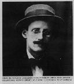

James Joyce was born on 2nd February 1882 in Rathgar, the affluent southside of Dublin. His family was initially very wealthy and James enjoyed the advantages of an upper middle-class upbringing for his first ten years. He attended the exclusive and expensive Jesuit school and lived in many fashionable addresses.
His father managed, however, to squander most of his wealth by the time James was ten and the family's fortunes began to decline. James was withdrawn from the school and the family was forced to leave the southside of Dublin and travel to the poorer north inner city.
In 1898 Joyce would attend another Jesuit institution, the Catholic University. Although he would repudiate Catholicism, Joyce remained grateful to his Jesuit teachers: "From them I have learnt to arrange things in such a way that they become easy to survey and judge".
Unsure of what to do after graduating with an indifferent degree, Joyce left for Paris late in 1902 ostensibly to study medicine. To have his voice trained and to become a professional singer was also a possibility. He succeeded at neither and returned home in the spring of 1903 when he hearned that his mother was dying.
Joyce started writing more seriously at this point and what he called "Epicleti" (what would become the "Epiphanies") was the first result. In early 1904 he wrote "A Portrait of the Artist" for the new Dana magazine which was rejected. Soon afterwards, he started expanding that piece into "Stephen Hero". In 1904, the first stories of "Dubliners" were written and published. The summer of 1904 was also significant because he met Nora Bernacle, the woman who would be a life-long partner and mother of two children, Giorgio and Lucia.
Joyce and Bernacle left Dublin for Italy in October 1904 where he worked in Trieste .
In 1907, Joyce published his first book, a collection of poems called "Chamber Music". Although "Dubliners" was complete in 1907, it was not published until 1914.
Joyce was already working on his masterpiece, "Ulysses". He had moved to neutral Switzerland in 1915 to avoid the war and was writing a book which concentrated on one day in the life of Dublin, 16th June 1904. The book is loosely structured on Homer's Odyssey and uses the "stream of consciousness" extensively. It was finished and finally published in 1922 in Paris. The book was an immediate succes-de-scandal and it was banned in the USA and in England.
The next thirteen years Joyce spent writing Work in Progress, what would eventually become "Finnegans Wake", a book sometimes termed his revenge on the english language. Although his eyesight was deteriorating steadily Joyce managed to write a book dreamt by a man in one night in a Chapelizod public house. Joyce was again frustrated by war and his book did not get much attention on publication. He went again to Zurich to avoid the madness and died there in the morning of 13th January 1941.